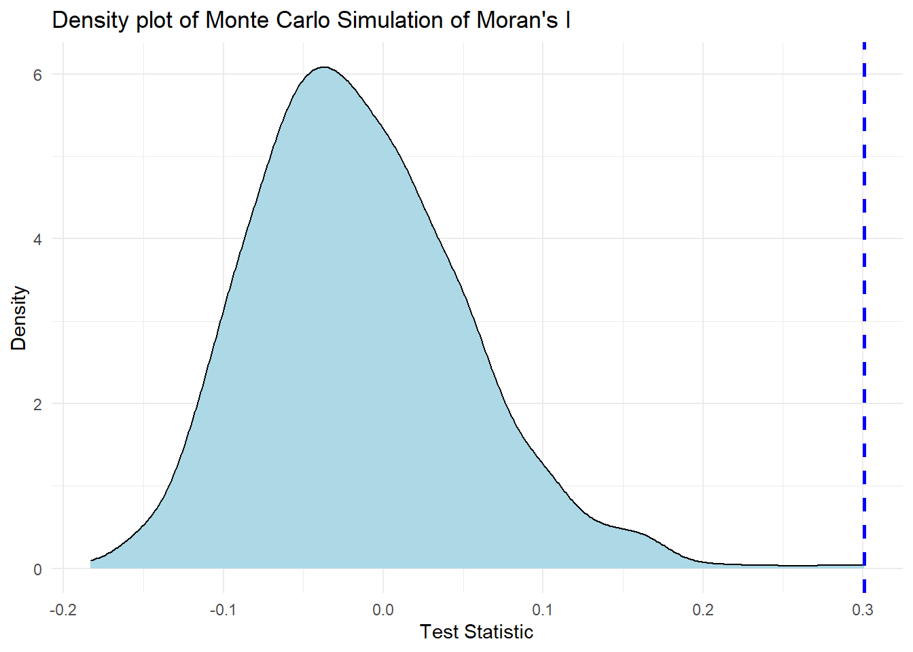
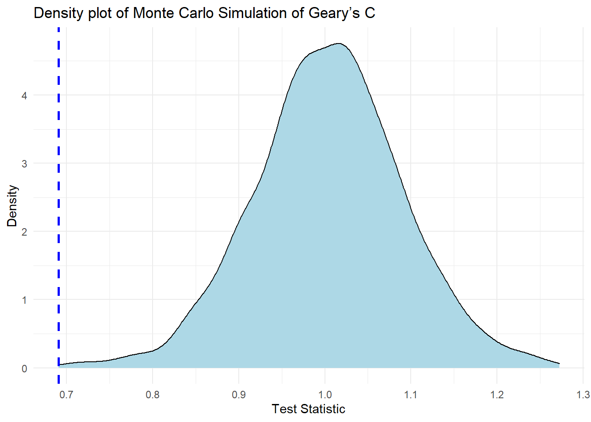
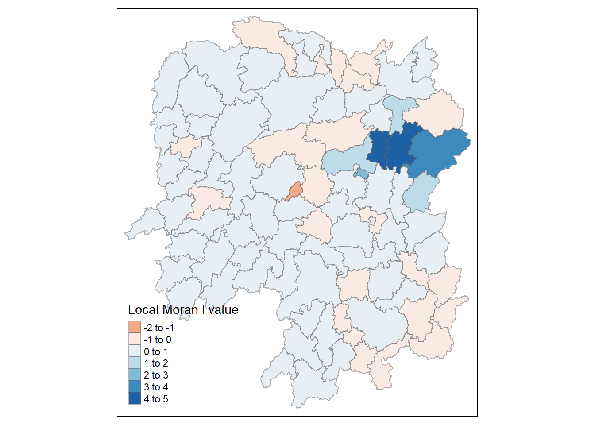
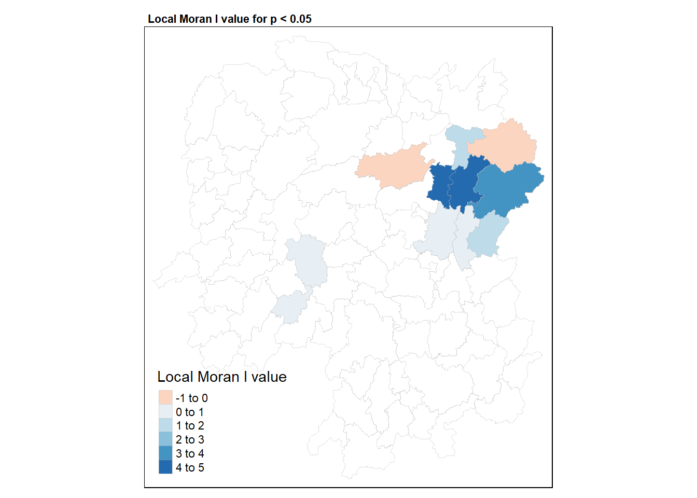
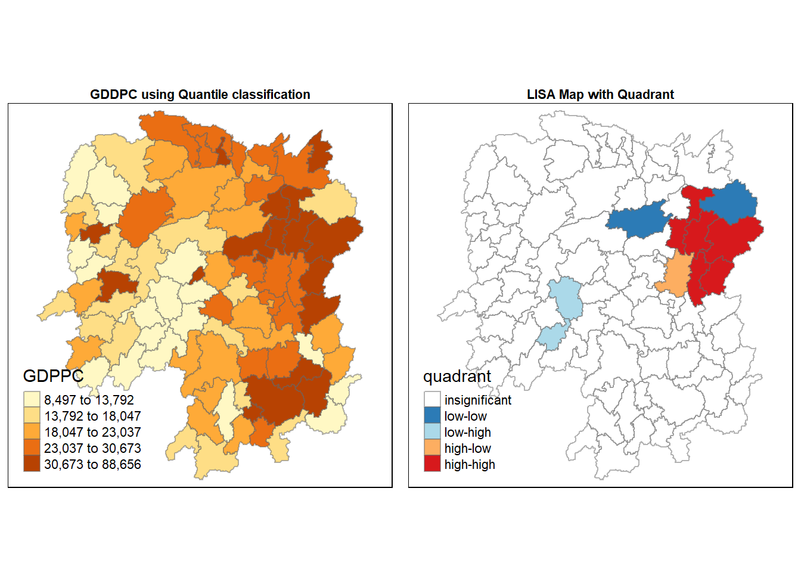

pacman::p_load(sf, spdep, tmap, tidyverse)Introduction to Global and Local Measures of Spatial Autocorrelation
Describing the presence of systematic spatial variation in a variable. “The first law of geography Everything is related to everything else, but near things are more related than distant things.” Waldo R. Tobler (Tobler, Waldo R. 1970)
geospatial
sf
spdep
tmap
Introduction
The Spatial Autocorrelation measures spatial autocorrelation based on feature locations and feature values simultaneously. Given a set of features and an associated attribute, it evaluates whether the expressed pattern is clustered, scattered, or random. The tool calculates the Moran’s I index value as well as a z-score and p-value to assess the significance of this index. P-values are numerical approximations of the area under the curve for a known distribution, bounded by the test statistic.
In this study we will explore the computation of Global and Local Measure of Spatial Autocorrelation (GLSA) by using spdep package.
Libraries
For this study, we will use the following packages from CRAN.
-
sf- Support for simple features, a standardized way to encode spatial vector data. Binds to ‘GDAL’ for reading and writing data, to ‘GEOS’ for geometrical operations, and to ‘PROJ’ for projection conversions and datum transformations. Uses by default the ‘s2’ package for spherical geometry operations on ellipsoidal (long/lat) coordinates. -
tidyverse- Loading the core tidyverse packages which will be used for data wrangling and visualisation. -
tmap- Thematic maps are geographical maps in which spatial data distributions are visualized. This package offers a flexible, layer-based, and easy to use approach to create thematic maps, such as choropleths and bubble maps. -
spdep- A collection of functions to create spatial weights matrix objects from polygon ‘contiguities’, from point patterns by distance and tessellations, for summarizing these objects, and for permitting their use in spatial data analysis, including regional aggregation by minimum spanning tree; a collection of tests for spatial ‘autocorrelation’
Data Preparation
Two dataset will be used for this study:
- Hunan.shp: A shapefile of the Hunan Province that consist of all the capital
- Hunan.csv: A csv file containing multiple attributes of each capital within Hunan
Importing of data
We will use the st_read to import the shape file and read_csv to import the aspatial data into the R environment. We will then use a relational join left_join to combine the spatial and aspatial data together.
hunan <- st_read(dsn = "data/geospatial",
layer = "Hunan")
hunan2012 <- read_csv("data/aspatial/Hunan_2012.csv")
hunan <- left_join(hunan,hunan2012)Visualisation of spatial data
For the visualisation, we will only be using tmap to show the distribution of GDPPC 2021.
tm_shape(hunan) +
tm_fill("GDPPC",
n = 5,
style = "quantile") +
tm_borders(alpha = 0.5) +
tm_layout(main.title = "GDDPC using Quantile classification", main.title.size = 0.7,
main.title.fontface = "bold", main.title.position = "center")Global Spatial Autocorrelation
Before we commence with spatial autocorrelation, we need to construct the spatial weights of the study region. The spatial weights is used to define the neighbourhood relationships between the geographical units (i.e. county) in the study area. Refer to my previous post to understand the flow of construsting the spatial weight.
Computing Contiguity Spatial Weights
For this study, we will be using the Queen contiguity weight matrix. The code chunk below will construct the weight matrix and subsequently implement the row-standardised weight matrix using the nb2listw() function.
wm_q <- poly2nb(hunan,
queen=TRUE)
rswm_q <- nb2listw(wm_q,
style="W",
zero.policy = TRUE)
rswm_qCharacteristics of weights list object:
Neighbour list object:
Number of regions: 88
Number of nonzero links: 448
Percentage nonzero weights: 5.785124
Average number of links: 5.090909
Weights style: W
Weights constants summary:
n nn S0 S1 S2
W 88 7744 88 37.86334 365.9147Global Spatial Autocorrelation: Moran’s I
We will now perform Moran’s I statistics testing by using the moran.test() from spdep.
moran.test(hunan$GDPPC,
listw=rswm_q,
zero.policy = TRUE,
na.action=na.omit)
Moran I test under randomisation
data: hunan$GDPPC
weights: rswm_q
Moran I statistic standard deviate = 4.7351, p-value = 1.095e-06
alternative hypothesis: greater
sample estimates:
Moran I statistic Expectation Variance
0.300749970 -0.011494253 0.004348351 To better understand the result, we will reference the following table.
| The p-value is not statistically significant. | You cannot reject the null hypothesis. It is quite possible that the spatial distribution of feature values is the result of random spatial processes. The observed spatial pattern of feature values could very well be one of many, many possible versions of complete spatial randomness (CSR). |
| The p-value is statistically significant, and the z-score is positive. | You may reject the null hypothesis. The spatial distribution of high values and/or low values in the dataset is more spatially clustered than would be expected if underlying spatial processes were random. |
| The p-value is statistically significant, and the z-score is not positive. | You may reject the null hypothesis. The spatial distribution of high values and low values in the dataset is more spatially dispersed than would be expected if underlying spatial processes were random. A dispersed spatial pattern often reflects some type of competitive process—a feature with a high value repels other features with high values; similarly, a feature with a low value repels other features with low values. |
The hypothesis:
H0 : The attribute being analyzed is randomly distributed among the features in your study area.
H1: The attribute being analyzed is not randomly distributed among the features in your study area.
Since the above result has a p-value below 0.05 and a positive z-score, we can conclude with statistical evidence that the attribute a not randomly distributed and the spatial distribution of high values and/or low values in the dataset is more spatially clustered
Computing Monte Carlo Moran’s I
The code chunk below performs permutation test for Moran’s I statistic by using moran.mc() of spdep. A total of 1000 simulation will be performed.
set.seed(1234)
bperm= moran.mc(hunan$GDPPC,
listw=rswm_q,
nsim=999,
zero.policy = TRUE,
na.action=na.omit)
bperm
Monte-Carlo simulation of Moran I
data: hunan$GDPPC
weights: rswm_q
number of simulations + 1: 1000
statistic = 0.30075, observed rank = 1000, p-value = 0.001
alternative hypothesis: greaterVisualising Monte Carlo Moran’s I
We will use a density plot to visualise the output of the Monte Carlo Moran’s I. First, we need to extract the res value and convert it into a dataframe. We then visualise the test statistic result using geom_density from the ggplot package.
monte_carlo <- as.data.frame(bperm[7])
ggplot(monte_carlo, aes(x=res)) +
geom_density(fill="lightblue") +
geom_vline(aes(xintercept=0.30075),
color="blue", linetype="dashed", size=1) +
labs(title = "Density plot of Monte Carlo Simulation of Moran's I", x = "Test Statistic", y = "Density") +
theme_minimal() 
From the plot, we can see the actual Moran’s I statistic (blue line) is far outside the simulated data (shaded in blue), indicating a significant evidence of positive autocorrelation.
Global Spatial Autocorrelation: Geary’s
We will now perform the Geary’c statistic testing by using the geary.test() function. We will also compute the Monte Carlo Geary’sc using the geary.mc.
geary.test(hunan$GDPPC, listw=rswm_q)
Geary C test under randomisation
data: hunan$GDPPC
weights: rswm_q
Geary C statistic standard deviate = 3.6108, p-value = 0.0001526
alternative hypothesis: Expectation greater than statistic
sample estimates:
Geary C statistic Expectation Variance
0.6907223 1.0000000 0.0073364 set.seed(1234)
gperm=geary.mc(hunan$GDPPC,
listw=rswm_q,
nsim=999)
gperm
Monte-Carlo simulation of Geary C
data: hunan$GDPPC
weights: rswm_q
number of simulations + 1: 1000
statistic = 0.69072, observed rank = 1, p-value = 0.001
alternative hypothesis: greaterBased on the result, the p-value is below the alpha value of 0.05 and therefore we can statistical evidence to reject the null hypothesis.
Visualising the Monte Carlo Geary’s C
monte_carlo_geary <- as.data.frame(gperm[7])
ggplot(monte_carlo_geary, aes(x=res)) +
geom_density(fill="lightblue") +
geom_vline(aes(xintercept=0.69072),
color="blue", linetype="dashed", size=1) +
labs(title = "Density plot of Monte Carlo Simulation of Geary’s C", x = "Test Statistic", y = "Density") +
theme_minimal() 
Unlike the Moran’s I where the statistical value is located on the right side of the density graph, the test statistic for Geary’s C is inversely related to Moran’s I where the value less than 1 indicates positive spatial autocorrelation, while a value larger than 1 points to negative spatial autocorrelation. Therefore, based on the plot, we can conclude there is significant evidence of positive autocorrelation.
Spatial Correlogram
A nonparametric spatial correlogram is another measure of overall spatial autocorrelation that does not rely on specifying a matrix of spatial weights. Instead, a local regression is fitted to the calculated covariances or correlations for all pairs of observations based on the distance between them. They show how correlated are pairs of spatial observations when you increase the distance (lag) between them - they are plots of some index of autocorrelation (Moran’s I or Geary’s c) against distance.Although correlograms are not as fundamental as variograms (a keystone concept of geostatistics), they are very useful as an exploratory and descriptive tool. For this purpose they actually provide richer information than variograms.
Compute Moran’s I and Geary’C correlogram
We will utilise the sp.correlogram() function from the spdep package and compute a 6-lag spatial correlogram of GDPPC. We then use the plot() and print() function to visualise the output. The method function can take in three different inputs:
- corr - correlation
- I - Moran’s I
- C - Geary’s C
We will illustrate the Moran’s I correlogram.
MI_corr <- sp.correlogram(wm_q,
hunan$GDPPC,
order=6,
method="I",
style="W")
plot(MI_corr)
print(MI_corr)Spatial correlogram for hunan$GDPPC
method: Moran's I
estimate expectation variance standard deviate Pr(I) two sided
1 (88) 0.3007500 -0.0114943 0.0043484 4.7351 2.189e-06 ***
2 (88) 0.2060084 -0.0114943 0.0020962 4.7505 2.029e-06 ***
3 (88) 0.0668273 -0.0114943 0.0014602 2.0496 0.040400 *
4 (88) 0.0299470 -0.0114943 0.0011717 1.2107 0.226015
5 (88) -0.1530471 -0.0114943 0.0012440 -4.0134 5.984e-05 ***
6 (88) -0.1187070 -0.0114943 0.0016791 -2.6164 0.008886 **
---
Signif. codes: 0 '***' 0.001 '**' 0.01 '*' 0.05 '.' 0.1 ' ' 1Now, we will illustrate the Geary’C correlogram.
GC_corr <- sp.correlogram(wm_q,
hunan$GDPPC,
order=6,
method="C",
style="W")
plot(GC_corr)
print(GC_corr)Spatial correlogram for hunan$GDPPC
method: Geary's C
estimate expectation variance standard deviate Pr(I) two sided
1 (88) 0.6907223 1.0000000 0.0073364 -3.6108 0.0003052 ***
2 (88) 0.7630197 1.0000000 0.0049126 -3.3811 0.0007220 ***
3 (88) 0.9397299 1.0000000 0.0049005 -0.8610 0.3892612
4 (88) 1.0098462 1.0000000 0.0039631 0.1564 0.8757128
5 (88) 1.2008204 1.0000000 0.0035568 3.3673 0.0007592 ***
6 (88) 1.0773386 1.0000000 0.0058042 1.0151 0.3100407
---
Signif. codes: 0 '***' 0.001 '**' 0.01 '*' 0.05 '.' 0.1 ' ' 1Interpretation of results
From the results and plot shown above, we understand the relationship between Moran’s I and Geary’C (inverse). We also can identify lag 1 and 2 with statistical evidence to have a positive autocorrelation and lag 5 and 6 to have a negative correlation with p-values below 0.05.
Cluster and Outlier Analysis
Local Indicators of Spatial Association (LISA) is a technique that allows analysts to identify areas on the map where data values are strongly positively or negatively correlated. We will now use techniques to detect clusters and/or outliers.
Computing local Moran’s I
To compute local Moran’s I, the localmoran() function of spdep will be used. It computes Ii values, given a set of zi values and a listw object providing neighbour weighting information for the polygon associated with the zi values.
Ii E.Ii Var.Ii Z.Ii Pr(z != E(Ii))
1 -0.001468468 -2.815006e-05 4.723841e-04 -0.06626904 0.9471636
2 0.025878173 -6.061953e-04 1.016664e-02 0.26266425 0.7928094
3 -0.011987646 -5.366648e-03 1.133362e-01 -0.01966705 0.9843090
4 0.001022468 -2.404783e-07 5.105969e-06 0.45259801 0.6508382
5 0.014814881 -6.829362e-05 1.449949e-03 0.39085814 0.6959021
6 -0.038793829 -3.860263e-04 6.475559e-03 -0.47728835 0.6331568localmoran() function returns a matrix of values whose columns are:
Ii: the local Moran’s I statistics
E.Ii: the expectation of local moran statistic under the randomisation hypothesis
Var.Ii: the variance of local moran statistic under the randomisation hypothesis
Z.Ii:the standard deviate of local moran statistic
Pr(): the p-value of local moran statistic
The z-scores and pseudo p-values represent the statistical significance of the computed index values.
The code chunk below list the content of the local Moran matrix derived by using printCoefmat().
printCoefmat(data.frame(localMI[fips,], row.names=hunan$County[fips]), check.names=FALSE) Ii E.Ii Var.Ii Z.Ii Pr.z....E.Ii..
Anhua -2.2493e-02 -5.0048e-03 5.8235e-02 -7.2467e-02 0.9422
Anren -3.9932e-01 -7.0111e-03 7.0348e-02 -1.4791e+00 0.1391
Anxiang -1.4685e-03 -2.8150e-05 4.7238e-04 -6.6269e-02 0.9472
Baojing 3.4737e-01 -5.0089e-03 8.3636e-02 1.2185e+00 0.2230
Chaling 2.0559e-02 -9.6812e-04 2.7711e-02 1.2932e-01 0.8971
Changning -2.9868e-05 -9.0010e-09 1.5105e-07 -7.6828e-02 0.9388
Changsha 4.9022e+00 -2.1348e-01 2.3194e+00 3.3590e+00 0.0008
Chengbu 7.3725e-01 -1.0534e-02 2.2132e-01 1.5895e+00 0.1119
Chenxi 1.4544e-01 -2.8156e-03 4.7116e-02 6.8299e-01 0.4946
Cili 7.3176e-02 -1.6747e-03 4.7902e-02 3.4200e-01 0.7324
Dao 2.1420e-01 -2.0824e-03 4.4123e-02 1.0297e+00 0.3032
Dongan 1.5210e-01 -6.3485e-04 1.3471e-02 1.3159e+00 0.1882
Dongkou 5.2918e-01 -6.4461e-03 1.0748e-01 1.6338e+00 0.1023
Fenghuang 1.8013e-01 -6.2832e-03 1.3257e-01 5.1198e-01 0.6087
Guidong -5.9160e-01 -1.3086e-02 3.7003e-01 -9.5104e-01 0.3416
Guiyang 1.8240e-01 -3.6908e-03 3.2610e-02 1.0305e+00 0.3028
Guzhang 2.8466e-01 -8.5054e-03 1.4152e-01 7.7931e-01 0.4358
Hanshou 2.5878e-02 -6.0620e-04 1.0167e-02 2.6266e-01 0.7928
Hengdong 9.9964e-03 -4.9063e-04 6.7742e-03 1.2742e-01 0.8986
Hengnan 2.8064e-02 -3.2160e-04 3.7597e-03 4.6294e-01 0.6434
Hengshan -5.8201e-03 -3.0437e-05 5.1076e-04 -2.5618e-01 0.7978
Hengyang 6.2997e-02 -1.3046e-03 2.1865e-02 4.3486e-01 0.6637
Hongjiang 1.8790e-01 -2.3019e-03 3.1725e-02 1.0678e+00 0.2856
Huarong -1.5389e-02 -1.8667e-03 8.1030e-02 -4.7503e-02 0.9621
Huayuan 8.3772e-02 -8.5569e-04 2.4495e-02 5.4072e-01 0.5887
Huitong 2.5997e-01 -5.2447e-03 1.1077e-01 7.9685e-01 0.4255
Jiahe -1.2431e-01 -3.0550e-03 5.1111e-02 -5.3633e-01 0.5917
Jianghua 2.8651e-01 -3.8280e-03 8.0968e-02 1.0204e+00 0.3076
Jiangyong 2.4337e-01 -2.7082e-03 1.1746e-01 7.1800e-01 0.4728
Jingzhou 1.8270e-01 -8.5106e-04 2.4363e-02 1.1759e+00 0.2396
Jinshi -1.1988e-02 -5.3666e-03 1.1334e-01 -1.9667e-02 0.9843
Jishou -2.8680e-01 -2.6305e-03 4.4028e-02 -1.3543e+00 0.1756
Lanshan 6.3334e-02 -9.6365e-04 2.0441e-02 4.4972e-01 0.6529
Leiyang 1.1581e-02 -1.4948e-04 2.5082e-03 2.3422e-01 0.8148
Lengshuijiang -1.7903e+00 -8.2129e-02 2.1598e+00 -1.1623e+00 0.2451
Li 1.0225e-03 -2.4048e-07 5.1060e-06 4.5260e-01 0.6508
Lianyuan -1.4672e-01 -1.8983e-03 1.9145e-02 -1.0467e+00 0.2952
Liling 1.3774e+00 -1.5097e-02 4.2601e-01 2.1335e+00 0.0329
Linli 1.4815e-02 -6.8294e-05 1.4499e-03 3.9086e-01 0.6959
Linwu -2.4621e-03 -9.0703e-06 1.9258e-04 -1.7676e-01 0.8597
Linxiang 6.5904e-02 -2.9028e-03 2.5470e-01 1.3634e-01 0.8916
Liuyang 3.3688e+00 -7.7502e-02 1.5180e+00 2.7972e+00 0.0052
Longhui 8.0801e-01 -1.1377e-02 1.5538e-01 2.0787e+00 0.0376
Longshan 7.5663e-01 -1.1100e-02 3.1449e-01 1.3690e+00 0.1710
Luxi 1.8177e-01 -2.4855e-03 3.4249e-02 9.9561e-01 0.3194
Mayang 2.1852e-01 -5.8773e-03 9.8049e-02 7.1663e-01 0.4736
Miluo 1.8704e+00 -1.6927e-02 2.7925e-01 3.5715e+00 0.0004
Nan -9.5789e-03 -4.9497e-04 6.8341e-03 -1.0988e-01 0.9125
Ningxiang 1.5607e+00 -7.3878e-02 8.0012e-01 1.8274e+00 0.0676
Ningyuan 2.0910e-01 -7.0884e-03 8.2306e-02 7.5356e-01 0.4511
Pingjiang -9.8964e-01 -2.6457e-03 5.6027e-02 -4.1698e+00 0.0000
Qidong 1.1806e-01 -2.1207e-03 2.4747e-02 7.6396e-01 0.4449
Qiyang 6.1966e-02 -7.3374e-04 8.5743e-03 6.7712e-01 0.4983
Rucheng -3.6992e-01 -8.8999e-03 2.5272e-01 -7.1814e-01 0.4727
Sangzhi 2.5053e-01 -4.9470e-03 6.8000e-02 9.7972e-01 0.3272
Shaodong -3.2659e-02 -3.6592e-05 5.0546e-04 -1.4510e+00 0.1468
Shaoshan 2.1223e+00 -5.0227e-02 1.3668e+00 1.8583e+00 0.0631
Shaoyang 5.9499e-01 -1.1253e-02 1.3012e-01 1.6807e+00 0.0928
Shimen -3.8794e-02 -3.8603e-04 6.4756e-03 -4.7729e-01 0.6332
Shuangfeng 9.2835e-03 -2.2867e-03 3.1516e-02 6.5174e-02 0.9480
Shuangpai 8.0591e-02 -3.1366e-04 8.9838e-03 8.5358e-01 0.3933
Suining 3.7585e-01 -3.5933e-03 4.1870e-02 1.8544e+00 0.0637
Taojiang -2.5394e-01 -1.2395e-03 1.4477e-02 -2.1002e+00 0.0357
Taoyuan 1.4729e-02 -1.2039e-04 8.5103e-04 5.0903e-01 0.6107
Tongdao 4.6482e-01 -6.9870e-03 1.9879e-01 1.0582e+00 0.2900
Wangcheng 4.4220e+00 -1.1067e-01 1.3596e+00 3.8873e+00 0.0001
Wugang 7.1003e-01 -7.8144e-03 1.0710e-01 2.1935e+00 0.0283
Xiangtan 2.4530e-01 -3.6457e-04 3.2319e-03 4.3213e+00 0.0000
Xiangxiang 2.6271e-01 -1.2703e-03 2.1290e-02 1.8092e+00 0.0704
Xiangyin 5.4525e-01 -4.7442e-03 7.9236e-02 1.9539e+00 0.0507
Xinhua 1.1810e-01 -6.2649e-03 8.6001e-02 4.2409e-01 0.6715
Xinhuang 1.5725e-01 -4.1820e-03 3.6648e-01 2.6667e-01 0.7897
Xinning 6.8928e-01 -9.6674e-03 2.0328e-01 1.5502e+00 0.1211
Xinshao 5.7578e-02 -8.5932e-03 1.1769e-01 1.9289e-01 0.8470
Xintian -7.4050e-03 -5.1493e-03 1.0877e-01 -6.8395e-03 0.9945
Xupu 3.2406e-01 -5.7468e-03 5.7735e-02 1.3726e+00 0.1699
Yanling -6.9021e-02 -5.9211e-04 9.9306e-03 -6.8667e-01 0.4923
Yizhang -2.6844e-01 -2.2463e-03 4.7588e-02 -1.2202e+00 0.2224
Yongshun 6.3064e-01 -1.1350e-02 1.8830e-01 1.4795e+00 0.1390
Yongxing 4.3411e-01 -9.0735e-03 1.5088e-01 1.1409e+00 0.2539
You 7.8750e-02 -7.2728e-03 1.2116e-01 2.4714e-01 0.8048
Yuanjiang 2.0004e-04 -1.7760e-04 2.9798e-03 6.9181e-03 0.9945
Yuanling 8.7298e-03 -2.2981e-06 2.3221e-05 1.8121e+00 0.0700
Yueyang 4.1189e-02 -1.9768e-04 2.3113e-03 8.6085e-01 0.3893
Zhijiang 1.0476e-01 -7.8123e-04 1.3100e-02 9.2214e-01 0.3565
Zhongfang -2.2685e-01 -2.1455e-03 3.5927e-02 -1.1855e+00 0.2358
Zhuzhou 3.2864e-01 -5.2432e-04 7.2391e-03 3.8688e+00 0.0001
Zixing -7.6849e-01 -8.8210e-02 9.4057e-01 -7.0144e-01 0.4830Mapping the local Moran’s I
We have to combine the local Moran’s dataframe with the our exisiting Hunan spatialdataframe before plotting. We will use the cbind() function.
hunan.localMI <- cbind(hunan,localMI) %>%
rename(Pr.Ii = Pr.z....E.Ii..)Mapping local Moran’s I values
Using choropleth mapping functions of tmap package, we can plot the local Moran’s I values by using the code chinks below.
tm_shape(hunan.localMI) +
tm_fill(col = "Ii",
style = "pretty",
palette = "RdBu",
title = "Local Moran I value") +
tm_borders(alpha = 0.5)
A positive value for I indicates that a feature has neighboring features with similarly high or low attribute values; this feature is part of a cluster. A negative value for I indicates that a feature has neighboring features with dissimilar values; this feature is an outlier. The choropleth shows there is evidence for both positive and negative Ii values. However, it is useful to consider the p-values for each of these values, as consider above.
Mapping local Moran’s I p-values
The code chunks below produce a choropleth map of Moran’s I p-values by using functions of tmap package.
tm_shape(hunan.localMI) +
tm_fill(col = "Pr.Ii",
breaks=c(-Inf, 0.001, 0.01, 0.05, 0.1, Inf),
palette="-Blues",
title = "Local Moran's I p-values") +
tm_borders(alpha = 0.5)
Mapping Moran’s I values and p-values
It will be more useful to understand which area Moran’s I value is statistically significant. We will create another dataframe with only areas that are statistically significant with a p value < 0.05. We will then plot the overlay above the base map and identify the area with positive and negative I value.
hunan.localMI.sub <- hunan.localMI %>%
filter (Pr.Ii <= 0.05)
tm_shape(hunan.localMI) +
tm_fill("white") +
tm_borders("grey", lwd = 0.5, alpha = 0.5) +
tm_shape(hunan.localMI.sub) +
tm_fill (col = "Ii",
style = "pretty",
palette = "RdBu",
title = "Local Moran I value") +
tm_borders("grey", lwd = 0.5, alpha = 0.5) +
tm_layout(main.title = "Local Moran I value for p < 0.05",
main.title.size = 0.7,
main.title.fontface = "bold")
From our plot, we are able to derive that 11 areas have I values that are statically significant, and 2 areas have negative I value which means a dissimilar features.
Creating a LISA Cluster Map
The LISA Cluster Map shows the significant locations color coded by type of spatial autocorrelation. The first step before we can generate the LISA cluster map is to plot the Moran scatterplot.
Plotting Moran scatterplot
The Moran scatterplot is an illustration of the relationship between the values of the chosen attribute at each location and the average value of the same attribute at neighboring locations.
The code chunk below plots the Moran scatterplot of GDPPC 2012 by using moran.plot() of spdep.
nci <- moran.plot(hunan$GDPPC, rswm_q,
labels=as.character(hunan$County),
xlab="GDPPC 2012",
ylab="Spatially Lag GDPPC 2012")
In the upper right quadrant, there are cases where both the attribute value and the local average are greater than the global average. Similarly, in the lower left quadrant, there are cases where both the attribute value and the local mean are below the global mean. These conditions confirm positive spatial autocorrelation. Cases in the other two quadrants show negative spatial autocorrelation.
Preparing LISA map classes
We will now prepare the LISA map classes. We first need to retrieve the quadrant for each area. The
Next, we centers the variable of interest around its mean.
DV <- hunan$GDPPC - mean(hunan$GDPPC) This is follow by centering the local Moran’s around the mean.
C_mI <- localMI[,1] - mean(localMI[,1]) Next, we will set a statistical significance level (\(\alpha\)) for the local Moran. (can be 0.05, 0.01 or 0.001)
signif <- 0.05 We will then define the quadrant based on the following criteria:
quadrant[DV >0 & C_mI>0] <- 4
quadrant[DV <0 & C_mI<0] <- 1
quadrant[DV <0 & C_mI>0] <- 2
quadrant[DV >0 & C_mI<0] <- 3Lastly, places non-significant Moran in the category 0.
quadrant[localMI[,5]>signif] <- 0Plotting LISA map
Once the quadrant of each area has been decided, we will now plot the LISA map using tmap. We will plot both the base map with the GDDPC distribution and the LISA map to better understand the relationship.
hunan.localMI$quadrant <- quadrant
colors <- c("#ffffff", "#2c7bb6", "#abd9e9", "#fdae61", "#d7191c")
clusters <- c("insignificant", "low-low", "low-high", "high-low", "high-high")
lisamap <- tm_shape(hunan.localMI) +
tm_fill(col = "quadrant",
style = "cat",
palette = colors[c(sort(unique(quadrant)))+1],
labels = clusters[c(sort(unique(quadrant)))+1],
popup.vars = c("")) +
tm_view(set.zoom.limits = c(11,17)) +
tm_borders(alpha=0.5) +
tm_layout(main.title = "LISA Map with Quadrant", main.title.size = 0.7,
main.title.fontface = "bold", main.title.position = "center")
basemap <- tm_shape(hunan) +
tm_fill("GDPPC",
n = 5,
style = "quantile") +
tm_borders(alpha = 0.5) +
tm_layout(main.title = "GDDPC using Quantile classification", main.title.size = 0.7,
main.title.fontface = "bold", main.title.position = "center")
tmap_arrange(basemap, lisamap, asp=1, ncol=2)
Hot Spot and Cold Spot Area Analysis
By grouping points of occurrence into polygons or converging points that are close to one another based on a calculated distance, Hotspot Analysis uses vectors to locate statistically significant hot spots and cold spots in your data.
Getis and Ord’s G-Statistics
The Getis and Ord’s G-statistics is used to measure the degree of clustering for either high or low values. The High/Low Clustering (Getis-Ord General G) statistic is an inferential statistic, which means that the null hypothesis is used to interpret the analysis’s findings. It is assumed that there is no spatial clustering of feature values when using the High/Low Clustering (General G) statistic.
The analysis consists of three steps:
Deriving spatial weight matrix
Computing Gi statistics
Mapping Gi statistics
Deriving distance-based weight matrix
First, we need to define a new set of neighbours. Whist the spatial autocorrelation considered units which shared borders, for Getis-Ord we are defining neighbours based on distance.
There are two type of distance-based proximity matrix, they are:
fixed distance weight matrix
adaptive distance weight matrix
These methods were explained on the previous post and therefore will not be elaborated here.
The code chunk below is to generate the fixed distance weight matrix:
coords <- st_centroid(st_geometry(hunan))
k1 <- knn2nb(knearneigh(coords))
k1dists <- unlist(nbdists(k1, coords))
wm_d59 <- dnearneigh(coords, 0, 59)
wm59_lw <- nb2listw(wm_d59, style = 'W')The output spatial weights object is called wm59_lw.
The code chunk below is to generate the adaptive distance weight matrix:
knn <- knn2nb(knearneigh(coords, k=8))
knn_lw <- nb2listw(knn, style = 'B')